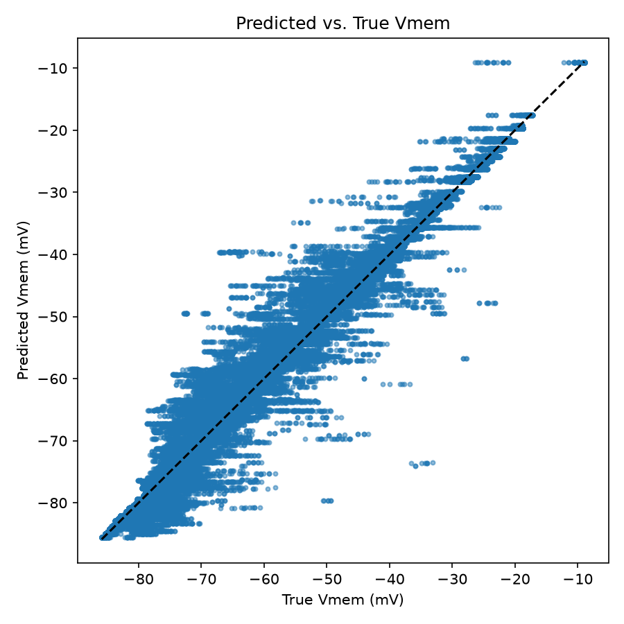

Republic 514a
The Cave
Prisoners have been chained since birth, facing a wall. A fire burns behind them, and people carry objects past it. The shadows on the wall are the only world the prisoners have ever known.
s9m Labs · Austin, Texas
Austin’s frontier AI and infrastructure lab. We measure how real brains compute, write each rule down as a datasheet, and build the models and chips that run on them.
01 Plato’s cave, in five scenes
Republic 514a
Prisoners have been chained since birth, facing a wall. A fire burns behind them, and people carry objects past it. The shadows on the wall are the only world the prisoners have ever known.
Republic 515a
Artificial intelligence has a wall of its own. Every frontier model is built from a single unit, the point neuron of 1943, which adds up its inputs and fires past a threshold. It is a shadow of the real thing.
Republic 515c
One prisoner is freed and turns around. The fire hurts his eyes, and the real objects are harder to make out than their shadows. Our turn is to stop copying the shadow and measure how real neurons compute.
Republic 515e
He is dragged up a steep and rugged path into the daylight, and sees the world as it is. Our path runs from recordings to datasheets, from datasheets to models, and from models to chips.
Republic 517a
Then he goes back down for the others. We will publish what we find, every datasheet and every recording, whether it passes or fails.
02 The thesis
1943 · The point neuron
Sum the inputs and fire past a threshold. Eighty years on, every frontier model is still made of this one unit.
Biology · The real neuron
A real neuron computes in its branches. Matching what one cortical neuron does took a deep network five to eight layers deep.Beniaguev, Segev & London, Neuron, 2021
Trained once in a data center, then shipped. It never learns from the world it meets.
Teach it something new and it loses what it already knew.
It keeps nothing between sessions and needs a server to think.
A fruit fly learns to avoid an odor after a single training session, and still remembers it a day later.
We scored more than forty systems against five requirements
None meets more than three at once. And the number no one reports is the energy it takes to write a memory inside a closed loop. That is where we begin.
03 The work
Wiring diagrams show what connects, not how it learns. So we record how real circuits change, turn each rule into a datasheet, and build upward from the datasheets.
01 Record
Most public brain data is calcium imaging, which is too slow to catch a learning rule as it happens. We fund fast electrical recordings of real neurons.

02 Read · Project Dusk
On simulated tissue it tracks the truth closely. On six real experiments it missed, with 12.46 mV of error against a 5.78 mV bar. That gap is exactly why we record. Code on GitHub ↗
03 Datasheet
Each principle becomes a datasheet of measured ranges, with a source and a confidence level on every field.
04 Agent · Project Dawn
An agent built from measured rules that learns on the device, from a single exposure, and keeps what it knew.
05 Chip · Project Daylight
Every synapse sits on the chip, and work happens only when an event arrives. A 2 mm² test die is planned for the November 2027 TSMC 28 nm run.
03.1 Try a measured rule
In the fly’s mushroom body, about 2,000 Kenyon cells encode each odor sparsely. When dopamine arrives just after an odor, the synapses those cells make onto a single output neuron lose about ninety percent of their strength. One pairing changes the response to that odor alone, and reversing the order flips the sign of the change.
Output neuron MBON-γ1pedc · spikes per odor
Each odor starts at 118 spikes. Pair one with dopamine, then smell it again.
Built from published whole-cell recordings: a single one-second odor paired with dopamine cut MBON-γ1pedc responses from 118 to 24 spikes, only for that odor and only when the odor came first (Hige et al., Neuron, 2015). Reversing the order flips the sign (Handler et al., Cell, 2019); its size here is illustrative.
04 The plan
Counted from the day our round closes. Each demonstration is designed to convince a different skeptic, and every result is made public, whether it passes or fails.
Who it serves
05 The team
Neuroscience, computer science and electrical engineering, in one room in Austin.

Founder · CEO
Formerly at HPE. An independent researcher in AI alignment, computational biology and power systems, and the builder of Cupric, an AI tool for designing circuit boards.

Co-founder · Head of Operations
Formerly at Dallas Venture Capital. Recognized at ISEF and IEEE Big Data for research in applied AI and financial economics.

Co-founder · Head of Research
A researcher in the Stachowiak Lab at UT Austin, working on cell signaling and biosensors. International Biomedical Olympiad finalist.

Advisor · Aigo.ai
Our scientific advisor. He co-coined the term AGI, founded Aigo.ai, and has spent twenty-five years building cognitive architectures.
We’re hiring
06 Contact
Researchers, engineers, partner labs and investors: we would be glad to hear from you.